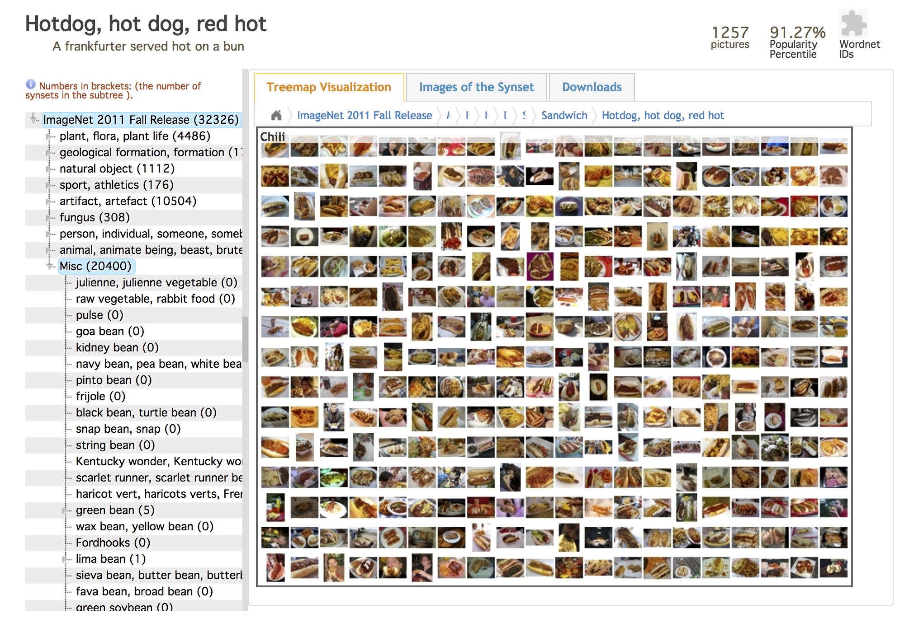
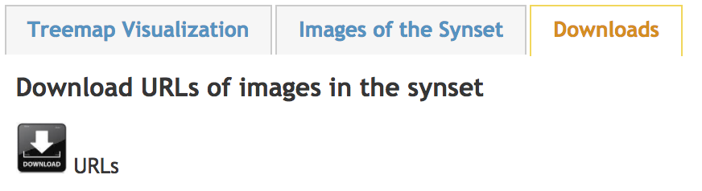
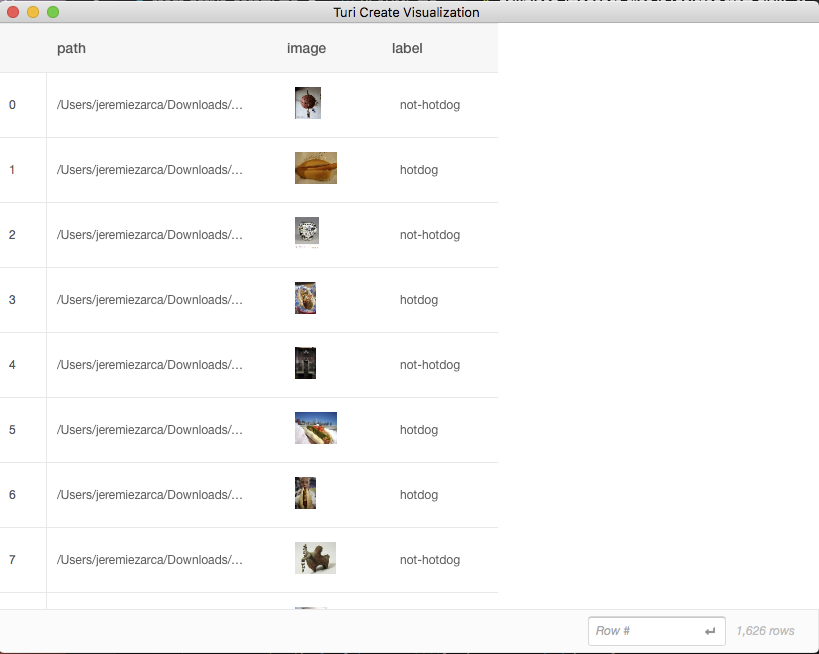

Du Machine Learning sur iOS avec CoreML et React-Native: partie 1, créer un modèle
Si vous êtes comme moi, et que vous avez toujours rêvé de développer une application capable de différencier un hotdog du teckel de votre voisine, ce tutoriel est pour vous.
Les solutions de Machine Learning sont depuis longtemps disponibles dans le cloud via des API, mais elles demandaient une connexion internet et leur temps de traitement pouvait s'avérer long et coûteux à la fois.
Avec la sortie d'iOS 11, Apple a mis à disposition des développeurs sa librairie de Machine Learning, CoreML. Désormais, il n'est plus nécessaire d'avoir un serveur puissant pour traiter les reqûetes ou faire appel à une API tierce. CoreML s'occupe de tout avec la puissance de calcul de votre smartphone.
Vous êtes curieux de savoir comment l'intégrer dans vos applications ? C'est plus simple que ce que vous pourriez penser.
Prenons comme exemple, la célèbre application parodique Not Hotdog, découverte dans la série Silicon Valley, qui, lorsque l'utilisateur pointe son smartphone vers un objet, lui dit instantanément si ce dernier regarde un hotdog ou non.

Ce que vous allez apprendre dans cette partie
- Installer votre environnement
- Collecter des données
- Créer votre modèle de classification d'image avec Turi Create
Les prérequis
-
macOS 10.12+
-
ou Linux (avec glibc 2.12+)
-
ou Windows 10 (via WSL)
-
Python 2.7, 3.5 ou 3.6
-
une architecture x86_64
Qu'est-ce que Turi Create ?
Il s'agit d'un outil qui « simplifie le développement de modèles de machine learning personnalisés », pouvant être ensuite exploités dans des applications utilisant la librairie CoreML.
Turi Create se base sur le framework de Deep Learning MXNet d'Apache
Turi Create met à disposition des développeurs une technologie souple pour classifier des images, détecter des objets, concevoir des systèmes de recommandations, ...
L'outil est extrêmement simple d'utilisation, flexible, et rapide.
Son installation
Comme pour beaucoup d'outils de Machine Learning, python est le langage utilisé. Mais ne vous en faites pas, le code est très simple à comprendre.
Il est recommandé d'utiliser un environnement virtuel, virtualenv, en entrant la commande
pip install virtualenv
Si vous n'avez pas pip, le gestionnaire de paquets de Python, vous pouvez l'installer grâce à Homebrew en entrant la commande
brew install pip
Puis,
// Créer un environnement virtuel Python
cd ~
virtualenv venv
// Activer votre environnement virtuel
source ~/venv/bin/activate
// Installer Turi Create
pip install -U turicreate
Collecter des données
Avant de pouvoir entraîner un modèle, il nous faut des données.
Ces données, on peut les trouver sur le site ImageNet qui est une très large base de données d'images, avec plus de 14 millions de résultats.
Pour notre projet, nous avons besoin de deux catégories d'images: Hotdog et... Not Hotdog.
Voici le lien pour la première: http://www.image-net.org/synset?wnid=n07697537.

On peut également récupérer tous les liens en utilisant l'API publique, via le bouton Download dans l'onglet Downloads

http://www.image-net.org/api/text/imagenet.synset.geturls?wnid=n07697537
Vous pourrez retrouver sur le repository turicreate-easy-scripts un ensemble de scripts qui vous faciliteront la vie
Ainsi, après avoir installé les dépendances, en entrant la commande
cd download-images
npm install
node imagenet-downloader.js http://www.image-net.org/api/text/imagenet.synset.geturls?wnid=n07697537 hotdog
nous obtiendrons un dossier rempli d'images de hotdogs.
Il ne reste plus qu'à faire la même chose pour Not Hotdog. Choisissez donc la/les catégories qui vous plaisent le plus et catégorisez-les comme not-hotdog
node imagenet-downloader.js http://image-net.org/api/text/imagenet.synset.geturls?wnid=n00021939 not-hotdog
Entraîner le modèle
Une fois les images téléchargées et catégorisées, il ne reste plus qu'à entraîner le modèle de classification.
Pour ce faire, vous pouvez utiliser le script python mis à disposition dans le repository téléchargé précédemment
cd train-model
python train-model.py

Vous obtiendrez au bout d'une dizaine de minutes, ou plus selon le nombre d'images à traiter, un fichier Classifier.mlmodel que l'on utilisera dans la seconde partie de ce tutoriel.
Merci de m'avoir lu et, si l'article vous a plu, n'hésitez pas à le partager sur les réseaux sociaux.
Jérémie.